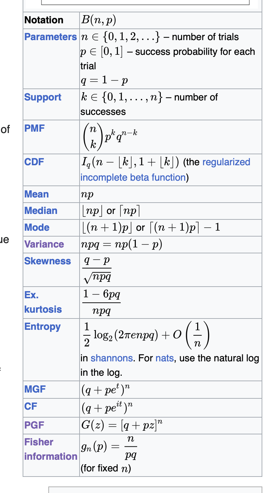
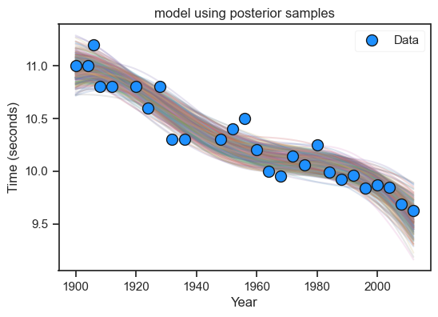
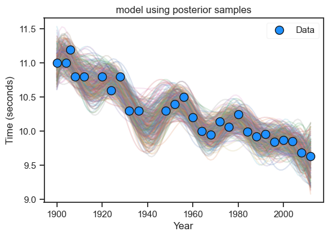

Code
p_HF_DF = 0.92
p_HT_DT = 0.95
p_DT = 0.01Please do not attempt to copy from, or discuss the contents of this paper with, any of your classmates during the course of this midterm. Any such attempt, will be viewed as a violation of Georgia Tech’s Honor Code, and this will result in a zero-point grade. Also note that you can, on your own accord, do poorly on this midterm and still get an A in the course. However, if you violate the Honor code, it is likely that the repercussions to your overall grade will be more severe.
You are not permitted to post any questions related to this midterm on the Ed Discussions page, Stackoverflow, any large language model (e.g., Chat GPT, Bard, etc.), social media, or any other discussion forum. Should there be any questions, please email me directly. The work you submit must be your own entirely.
If you have utilized any resource (e.g., textbook, Wikipedia, lecture notes from another source) you must clearly state the source is and where you have used it. You must also do the same for the AE8803 lecture notes, e.g., when using the definition of the Binomial distribution, please state which lecture / slide number / and where you used it.
For the questions below, the integer value in the brackets indicates the number of points assigned to a particular question.
A drawer contains red socks and black socks. When two socks are drawn at random, the probability that both are red is \(0.5\).
How small can the number of socks in the drawer be?
How small if the number of black socks is even?
Total points: [6]
This is a problem from Frederick Mosteller’s Fifty Challenging Problems in Probability. There are many ways to solve this, including using numbers and proceeding arithmetically. Here, we pursue and algebraic approach.
Let there be \(r\) red socks and \(b\) black socks. The probability of the first sock’s being red is \(r/(r + b)\). Note that if the first sock is red, then the probability of the second sock being red is now \((r-1)/(r+b-1)\), i.e., since a red sock has been removed.
As we require the probability of both socks to be red to be \(0.5\), we can write
\[ \frac{r}{r + b} \times \frac{r-1}{r+b-1} = 0.5 \]
Note that for \(b > 0\)
\[ \frac{r}{r+b} > \frac{r-1}{r+b-1} . \]
Thus, we can create the inequalities
\[ \left( \frac{r}{r+b} \right)^2 > 0.5 > \left( \frac{r-1}{r+b-1} \right)^2 \]
Taking square roots, for \(r>1\) we have
\[ \frac{r}{r+b} > \frac{1}{\sqrt{2}} > \frac{r-1}{r+b-1} \]
From the first inequality, we obtain
\[ \begin{aligned} r & > \frac{1}{\sqrt{2}} \left( r + b \right) \\ & > \frac{1}{\sqrt{2} - 1} b \\ & = \left( \sqrt{2} + 1 \right)b \\ \end{aligned} \]
and from the second
\[ \left( \sqrt{2} + 1\right)b > r - 1 \]
which leads to
\[ \left( \sqrt{2} + 1 \right) b + 1 > r > \left( \sqrt{2} + 1 \right) b. \]
For \(b=1\), \(r\) must be greater than 2.41 and less than 3.41, which means that \(r=3\), and for \(r=3\), \(b=1\). To confirm, see that
\[ p \left( 2 \; \textrm{red socks} \right) = \frac{3}{4} \times \frac{2}{3} = \frac{1}{2}. \]
So the smallest number of socks is \(4\). Investigating even values of \(b\) leads to
| b | \(r\) is between | valid \(r\) | \(p \left( 2 \; \textrm{red socks} \right)\) |
|---|---|---|---|
| 2 | 5.8, 4.8 | 5 | \(\frac{5(4)}{7(6)}\neq \frac{1}{2}\) |
| 4 | 10.7, 9.7 | 10 | \(\frac{10(9)}{14(13)}\neq \frac{1}{2}\) |
| 6 | 15.5, 14.5 | 15 | \(\frac{15(14)}{21(20)} = \frac{1}{2}\) |
Thus, \(21\) socks is the smallest number when \(b\) is even.
Let \(X\) and \(Y\) be independent random variables. Also let \(Z=X + Y\).
Using probability generating functions, show that if \(X \sim Binomial \left(n, p \right)\) and \(Y \sim Binomial \left(m, p\right)\), then \(Z \sim Binomial \left(n+m, p \right)\). [4]
Assume that \(X\) and \(Y\) are continuous and their probability density functions are \(f_{X}\left( x\right)\) and \(f_{Y}\left( y \right)\) respectively. By considering the cumulative density function of \(Z\) given \(X\), or otherwise, show that the following holds [4]:
\[ f_{Z|X} \left( z | x \right) = f_{Y} \left( z - x \right) \]
Derive the conditional probability density function of \(X\), given that \(Z=z\), when \(X \sim \mathcal{N} \left(0, 1\right)\) and \(Y \sim \mathcal{N} \left(0, 1 \right)\). [4]
Compute the expectation of \(1/\left(Z + 1 \right)\), when \(X \sim Poisson \left( \lambda \right)\) and \(Y \sim Poisson \left( \lambda \right)\) [4]. You may find this Wikipedia page useful. [4]
Total points: [16]

The probability generating function of \(X\) is given by
\[ q_{X} \left( z \right) = \left( 1 - p + pz \right)^{n} \]
and for \(Y\) we have
\[ q_{Y} \left( z \right) = \left( 1 - p + pz \right)^{m} \]
Thus, for \(Z\) we have
\[ q_{Z} \left( z \right) = q_{X+Y}\left( z \right) = q_{X} \left( z \right) q_{Y} \left( z \right) = \left( 1 - p + pz \right)^{n+m} \]
This is a probability generating function of a Binomial distribution \(\left(n+m, p \right)\).
\[ \begin{aligned} F_{Z | X} \left( z | x \right) & = p \left( Z \leq z | X \leq x \right) \\ & = p \left( X + Y \leq z | X = x \right) \\ & = p \left( X + Y \leq z \right) \\ & = p \left( Y \leq z - X \right) \\ & = F_{Y} \left(z - x \right) \end{aligned} \]
Taking the derivative we now have
\[ \frac{\partial F_{Z | X} \left( z | x \right) }{\partial z} = f_{Z | X} \left( z | x \right) \]
and
\[ \frac{\partial F_{Y} \left( z - x \right)}{\partial z} = f_{Y} \left( z - x \right) \]
Hence \(f_{Z | X} \left( z | x \right) = f_{Y} \left( z - x \right)\).
\[ \begin{aligned} f_{X|Z} \left(x | z \right) & = \frac{f_{Z|X} \left( z | x \right) f_{X} \left( x \right) }{f_{Z} \left( z \right)}\\ f_{X|Z}(x|z) &= \frac{f(x,z)}{f(z)} \\ &= \frac{f_X(x) f_Y(z-x)}{f_Z(z)} \\ &= \frac{\frac{1}{\sqrt{2 \pi}} \exp {\bigg(\frac{-x^2}{2}\bigg)} \cdot \frac{1}{\sqrt{2 \pi}} \exp {\bigg(\frac{-(z-x)^2}{2}\bigg)}}{\frac{1}{\sqrt{4\pi}}\exp{( -\frac{z^2}{4})}} \ \ \ \ \ \ \ (\because Z \sim \mathcal{N}(0, 2))\\ &= \frac{1}{\sqrt{\pi}} \exp{\bigg( -\frac{x^2}{2} - \frac{(z-x)^2}{2} + \frac{z^2}{4}\bigg)}\\ &= \frac{1}{\sqrt{\pi}} \exp{\bigg( -\frac{x^2}{2} - \frac{z^2 - 2xz + x^2}{2} + \frac{z^2}{4}\bigg)}\\ &= \frac{1}{\sqrt{\pi}} \exp{\bigg( \frac{-2x^2 + 2xz - z^2}{2} + \frac{z^2}{4}\bigg)}\\ &= \frac{1}{\sqrt{\pi}} \exp{\bigg( \frac{1}{2} (-2x^2 + 2xz - z^2 + \frac{z^2}{2})\bigg)}\\ &= \frac{1}{\sqrt{\pi}} \exp{\bigg( \frac{1}{2} (-2x^2 + 2xz - \frac{z^2}{2})\bigg)}\\ &= \frac{1}{\sqrt{\pi}} \exp{\bigg( -x^2 + xz - \frac{z^2}{4}\bigg)}\\ &= \frac{1}{\sqrt{\pi}} \exp{\bigg( -(x^2 - xz + \frac{z^2}{4})\bigg)}\\ &= \frac{1}{\sqrt{\pi}} \exp{\Bigg( -\bigg(x^2 - 2x\frac{z}{2} + \big(\frac{z}{2}\big)^2\bigg)\Bigg)}\\ \therefore f_{X|Z}(x|z)&= \frac{1}{\sqrt{\pi}} \exp{\bigg\{- \big(x - \frac{z}{2}\big)^2 \bigg\}} \end{aligned} \]
This leads to a Gaussian distribution, \(\mathcal{N} \left(\mu = \frac{z}{2}, \sigma^2 = \frac{1}{2} \right)\).
(iv) As before, we will make use of probability generating functions. From Wikipedia, we note that the probability generating functions for \(X\) and \(Y\) is given by \(q_{X} \left( z \right) = exp \left( \lambda \left( z - 1 \right) \right)\), and \(q_{Y} \left( z \right) = exp \left( \lambda \left( z - 1 \right) \right)\).
The probability generating function associated with \(Z\) is given by \(X+Y\), so we have
\[ q_{Z} \left( z \right) = q_{X} \left( z \right) q_{Y} \left( z \right) = exp \left(2 \lambda \left( z - 1 \right) \right) \]
Hence, \(Z \sim \textrm{Poisson} \left( 2 \lambda \right)\). The expectation can be worked out by recognizing that the probability density function is given by
\[ f_{Y} \left( k \right) = \frac{\lambda^{k} exp\left(-\lambda \right)}{k!}, \; \; \; \; for \; \; k=0, 1, 2, 3, \ldots \]
Now, for a discrete random variable, \(Y\), the expectation of the function \(g\left(y \right)\) is given by
\[ \mathbb{E} \left[ g \left( Y \right) \right] = \mathbb{E} \sum g \left( y \right) f_{Y} \left( y \right). \]
Note that for \(Y \sim \textrm{Poisson} \left( \lambda \right)\), we have
\[ \begin{aligned} \mathbb{E} \left[ Y \right] & = \sum_{k=0}^{\infty} \frac{\lambda^{k}}{k!} exp \left( - \lambda \right) \end{aligned} \]
Thus, for \(Z\) we have \[ \begin{aligned} \mathbb{E} \left[ \frac{1}{Z+1} \right] & = \sum_{k=0}^{\infty} \frac{1}{k+1} exp\left( - 2\lambda \right) \frac{\left( 2 \lambda \right)^{k}}{k!}\\ & = exp\left( - 2\lambda \right) \sum_{k=0}^{\infty} \frac{\left( 2 \lambda \right)^{k}}{\left(k+1\right)!}\\ & = exp\left( - 2\lambda \right) \frac{1}{2 \lambda}\sum_{k=0}^{\infty} \frac{\left( 2 \lambda \right)^{k+1}}{\left(k+1\right)!}\\ & = \frac{1}{2 \lambda} \left( 1 - exp \left( - 2 \lambda \right) \right) \end{aligned} \]
where in the second last equation we have used the Taylor series expansion for \(exp\).
A new test for a disease has been produced by a company. Trials revealed that if a test user has the disease, the test is positive with \(95\%\) probability. Similarly, if the user does not have the disease, the test is negative with \(92 \%\) probability. Approximately \(1\%\) of the opulation is suspected to have this disease. Compute the probabilities below:
The probability that a randomly chosen individual will test positive. [4]
The probability that a randomly chosen individual who tests positive will have the disease. [4]
Total points: [8]
| True / False | G | D |
|---|---|---|
| T | Test is positive | Has disease |
| F | Test is negative | Doesn’t have disease |
Thus, from the problem statement we can furnish the following probabilities
\[ \begin{aligned} p \left( H = F | D = F \right) & = 0.92 \\ p \left( H = T | D = T \right) & = 0.95 \\ p \left( D = T \right) & = 0.01 \end{aligned} \]
The probability that a randomly chosen individual will test positive is given by
\[ \begin{aligned} p \left( H = T \right) & = p \left( H = T, D = F \right) + P \left( H = T, D = T \right) \\ & = p \left( H = T | D = F \right) p \left( D = F \right) + p \left(H = T | D = T \right) p \left(D = T \right)\\ & = (1 - 0.92)(1 - 0.01) + 0.95 \times 0.01 \\ \end{aligned} \]
ii) The probability that a randomly chosen individual who tests positive will have the disease is given by
\[ \begin{aligned} p \left( D = T | H = T\right) & = \frac{p \left( D = T, H = T \right) }{p \left( H = T \right)} \\ & = \frac{p \left( H = T | D = T \right) p \left( D = T \right) }{p \left( H = T \right)} \end{aligned} \]
In Lecture 8, we had studied a Bayesian model applied to the Olympic winning time dataset. A key modelling decision was what basis terms to incorporate within \(\mathbf{X}\) and relatedly, the number of unknown model parameters (determined by the number of columns in \(\mathbf{X}\)). Now, you will re-visit this dataset, but with a few changes:
Select a non-polynomial basis of your choice (e.g., harmonic, exponential, logarithmic, or even a combination thereof) to input in a tall \(\mathbf{X}\) to best match the data. [6]
Carefully select a multivariate normal prior \(p \left(\mathbf{w} | \boldsymbol{\mu}_{0}, \boldsymbol{\Sigma}_{0} \right)\) for your new model parameters \(\mathbf{w}\). You are free to vary the above mean and covariance as you see best. [6]
Repeat (i) and (ii) for the case where the number of model parameters is greater than the number of data observations. You will have to alter your prior and \(\mathbf{X}\) across these two cases. You may also choose to subsample from the original dataset if that helps. [12]
Please ensure that you provide executable code below, along with appropriate comments, to address the statements above. For your experiments, pay particular attention to the condition number of the matrix, and the assumed observation noise.
Total points: [24]
(i) and (ii) The code below is amended from Lecture 8; below we select a harmonic basis.
import pandas as pd
import numpy as np
import matplotlib
import matplotlib.pyplot as plt
from scipy.stats import multivariate_normal
import seaborn as sns
sns.set(font_scale=1.0)
sns.set_style("white")
sns.set_style("ticks")
palette = sns.color_palette('deep')
df = pd.read_csv('data100m.csv')
df.columns=['Year', 'Time']
N = df.shape[0]
# Data & basis
max_year, min_year = df['Year'].values.max() , df['Year'].values.min()
x = (df['Year'].values.reshape(N,1) - min_year)/(max_year - min_year)
t = df['Time'].values.reshape(N,1)
X_func = lambda u : np.hstack([np.ones((u.shape[0],1)), np.sin(u), np.cos(u), np.sin(6*u), np.cos(6*u) ])
X = X_func(x)
M = X.shape[1]
# For prediction / plotting
xgrid = np.linspace(0, 1, 100).reshape(100,1)
Xg = X_func(xgrid)
xi = xgrid*(max_year - min_year) + min_year
xi = xi.flatten()
sigma_hat = 0.2
sigma_w = 2.0
# Prior
random_samples = 300
mu_0 = np.zeros((M,1))
Sigma_0 = np.eye(M)
inv_Sigma_0 = np.eye(M) * 1/(sigma_w**2)
prior = multivariate_normal(mu_0.flatten(), Sigma_0)
# Posterior
Sigma_w = np.linalg.inv(1./(sigma_hat**2) * (X.T @ X) + inv_Sigma_0)
mu_w = Sigma_w @ (1./(sigma_hat**2) * (X.T @ t) + (inv_Sigma_0 @ mu_0) )
posterior = multivariate_normal(mu_w.flatten(), Sigma_w)
fig, ax = plt.subplots( figsize=(6,4))
plt.plot(xi, Xg @ posterior.rvs(random_samples).T, zorder=-1, alpha=0.2)
a, = plt.plot(df['Year'].values, df['Time'].values, 'o', color='dodgerblue', \
label='Data', markeredgecolor='k', lw=1, ms=10, zorder=1)
plt.xlabel('Year')
plt.title('model using posterior samples')
plt.legend([a ], ['Data'], framealpha=0.2)
plt.ylabel('Time (seconds)')
plt.savefig('posterior.png', dpi=150, bbox_inches='tight', facecolor="#6C757D")
plt.show()
(iii). Rather than select a subset of the data, we can add more basis terms.
def X_func(u):
modes = 14
M = np.ones((u.shape[0], 2*modes+1))
for j in range(1, 2*modes+1):
if j % 2 == 0:
M[:,j] = np.sin(j * u).flatten()
else:
M[:,j] = np.cos(j * u).flatten()
return M
X = X_func(x)
M = X.shape[1]
# For prediction / plotting
xgrid = np.linspace(0, 1, 100).reshape(100,1)
Xg = X_func(xgrid)
xi = xgrid*(max_year - min_year) + min_year
xi = xi.flatten()
sigma_hat = 0.2
sigma_w = 2.0
# Prior
random_samples = 300
mu_0 = np.zeros((M,1))
Sigma_0 = np.eye(M) * 0.01
inv_Sigma_0 = np.eye(M) * 1/(sigma_w**2)
prior = multivariate_normal(mu_0.flatten(), Sigma_0)
# Posterior
Sigma_w = np.linalg.inv(1./(sigma_hat**2) * (X.T @ X) + inv_Sigma_0)
mu_w = Sigma_w @ (1./(sigma_hat**2) * (X.T @ t) + (inv_Sigma_0 @ mu_0) )
posterior = multivariate_normal(mu_w.flatten(), Sigma_w)
fig, ax = plt.subplots( figsize=(6,4))
plt.plot(xi, Xg @ posterior.rvs(random_samples).T, zorder=-1, alpha=0.2)
a, = plt.plot(df['Year'].values, df['Time'].values, 'o', color='dodgerblue', \
label='Data', markeredgecolor='k', lw=1, ms=10, zorder=1)
plt.xlabel('Year')
plt.title('model using posterior samples')
plt.legend([a ], ['Data'], framealpha=0.2)
plt.ylabel('Time (seconds)')
plt.show()
Whilst I have not included any summarizing statements here, I expect students to study the condition number and vary the prior. Marks were deducted for models that did not bear any resemblance to the data.